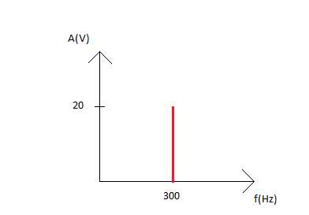

| Töö tegijate nimed: Eliise Juhansoo |
| Töö tegemise kuupäev: Mon Oct 2 15:28:14 2017 |
| Terminalseadme seisund | U1 [V] | U2 [V] | U3 [V] |
| Rahuseisund | 49.9 | 50.0 | 0 |
| Hõiveseisund | 9.8 | 7.2 | 2.6 |
Valimistooni kestus: 8s.
Leida vool, mis läbib terminalseadet tema mõlemates seisundites ja selgitada tulemusi.
Irahuseisundis = U3 rahuseisundis / R = 0 / 50 = 0 A
Ihõiveseisundis = U3 hõiveseisundis / R = 2,6 / 50 = 0,052 A
Arvutada telefoniaparaadi takistus ja telefoniliini takistus.
Rtel = U2 hõiveseisundis / Ihõiveseisundis = 7,2 / 0,052 = 138,46 Ω
Rliin = (U1 rahus - U1 hõives) / Ihõiveseisundis = (49,9 - 9,8) / 0,052 = 771,15 Ω
Rkogu = Rliin + Rtel + Reeltakisti = 771,15 + 138,46 + 50 = 959,61 Ω
| Valimistoon | |
| Pinge amplituud | 616mV |
| periood | 2.3ms |
| sagedus | 434.8Hz |
| Vile | Signaalipilt | Spektripilt | |
| Pinge amplituud | 2.44V |  |
 |
| Periood | 650μs | ||
| Sagedus | 1.538kHz | ||
| Vokaal | Signaalpilt | Spektripilt | |
| Pinge amplituud (kõige suurem) | 1.26V |  |
 |
| Periood (kõige pikem) | 4.5ms | ||
| Periood (kõige lühem) | 1ms | ||
| Sagedus (kõige madalam) | 220Hz | ||
| Sagedus (kõige kõrgem) | 1kHz | ||
| Kutsesignaal |  |
| Pinge amplituud | 222V |
| periood | 40ms |
| sagedus | 25Hz |
| Toonvalimine |  |
 |
| valitud number | 1 | 2 |
| jooniselt leitud esimene sagedus | 700Hz | 700Hz |
| jooniselt leitud teine sagedus | 1.22kHz | 1.33kHz |
| tehtud järeldus tabelist 1 | Valitud numbrit saab tema sageduste järgi kindlaks määrata. | Valitud numbrit saab tema sageduste järgi kindlaks määrata. |
Õppuri kood: 164030
y = A*sin(ω*t + φ)
A = 20 V
f = 300 Hz
φ = 0
ω = 2*π*f
ω = 2*π*300 = 600π Hz
y = 20*sin(600π*t)

Tutvusin analoogtelefoni tööga. Mõõtsin terminalseade pinget rahu- ja hõiveseisundis. Lisaks uurisin ostsillograafi abil valimistooni, vile, vokaali, kutsesignaali ning toonvalimise signaale. Toonvalimise puhul oli näha, et mõõtmise tulemus oli sama tabelis antud andmetega, seega saab valitud toone mõõtmistulemuste abil kindlaks teha.